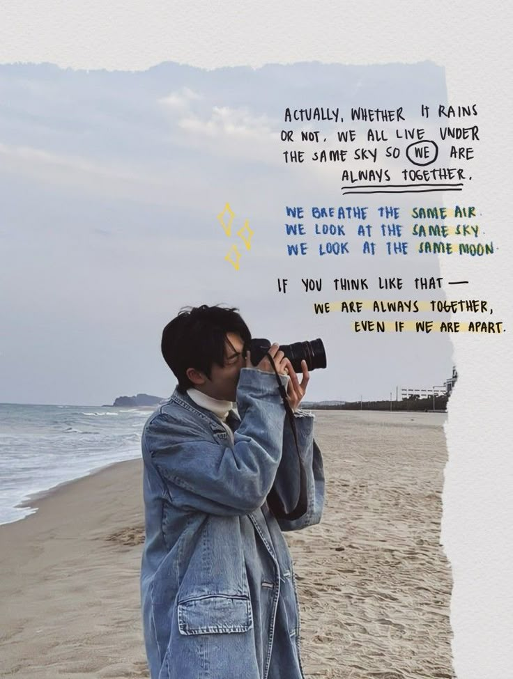
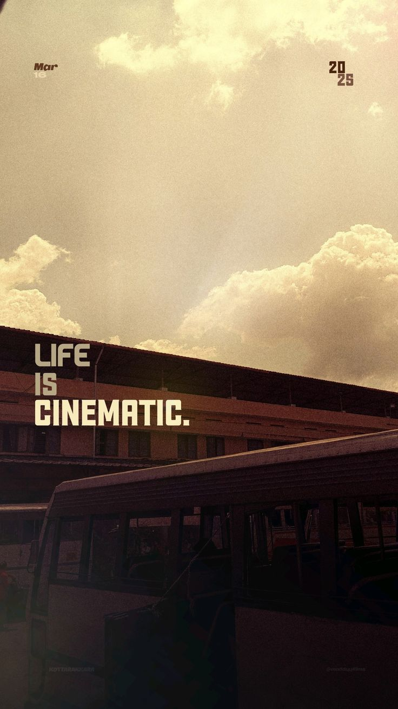
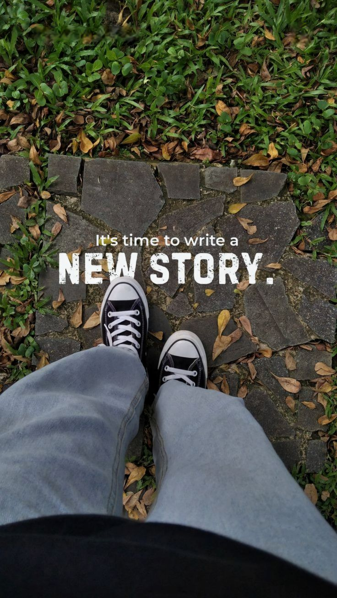
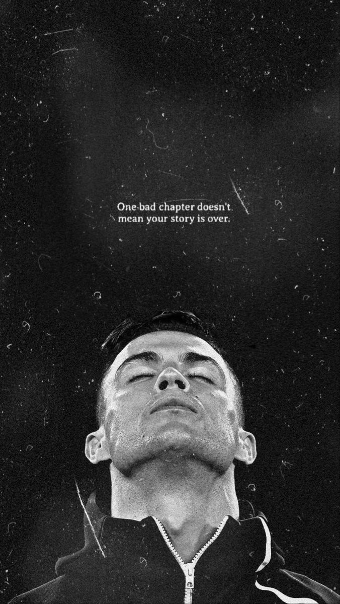
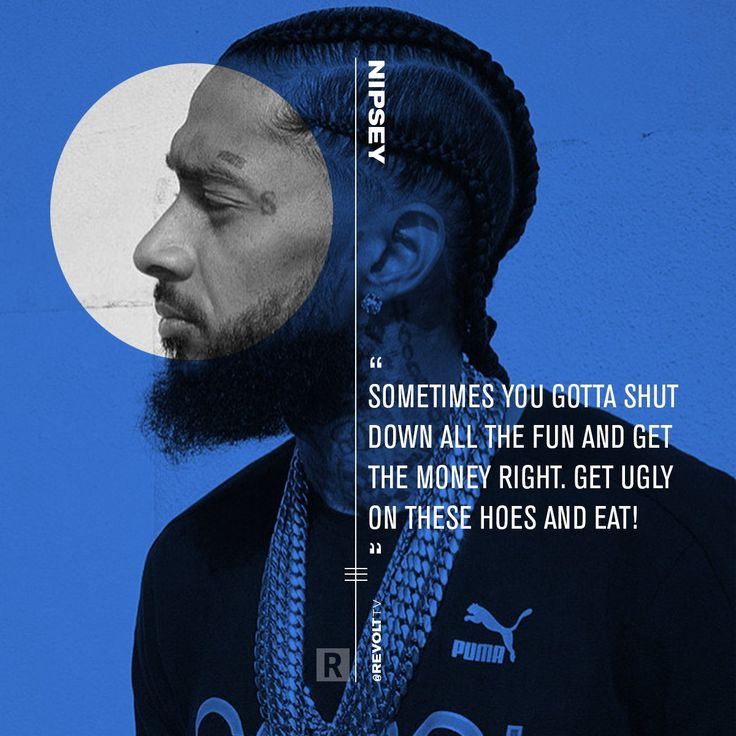

- cette page a été crée pour répondre à un d'html donné par Chatgpt : Profil de Jean-Eudes
- Explorateur curieux du numérique, passionné par l’innovation et la culture geek
- Jean-Eudes est un passionné de technologie et de culture japonaise, toujours en quête de nouvelles découvertes. Il s'intéresse autant au développement mobile (Kotlin, Android Studio) qu’au design (Figma) et à la création de projets utiles (comme une appli de gestion des ordures ou un carnet de santé numérique).
- Fan d’anime, il a un attachement particulier pour Steins;Gate et explore avec plaisir des œuvres marquantes comme Wonder Egg Priority ou Be the Beginning. Côté gaming, il aime bidouiller des jeux pour les optimiser sur son PC, découvrir des mods ou tester des jeux coopératifs légers.
- Toujours avide de comprendre ce qui l’entoure, il pose des questions sur l’histoire derrière les chansons, les séries ou même des termes courants. Il aime également peaufiner ses connaissances en anglais et n’hésite pas à me demander des explications grammaticales.
- Bref, Jean-Eudes est un esprit curieux et polyvalent, avec une approche à la fois technique et humaine des sujets qu’il explore. Son objectif ? Apprendre, comprendre, créer — et partager..
OSEZ BRILLER



 • Instagram photos and videos.jpg)
"Inspirez. Agissez. Réussissez."




différence frontend et backend
Élément 1
Élément 2
Élément 3